相模原麻溝公園
| 日付 | 2016年12月4日（日） |
|---|---|
| メンバー | 家族（妻、長女・5歳、長男・3歳） |
| アクセス | 車 |
子供たちがまたモルモットを抱っこしたいと言っているため、
1年ぶりに相模原麻溝公園に行くことにする。
モルモットは後回しで、まずはネットツリーに登って遊ぶ。
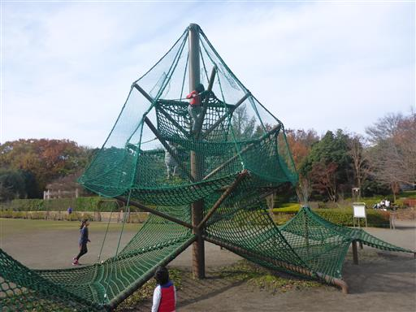
あまり跳ねないトランポリン。
自分で頑張ってジャンプする必要があるので結構疲れる。
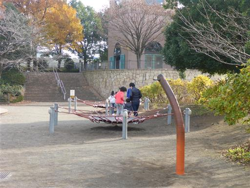
アスレチック広場に移動。娘は早速遊び始める。
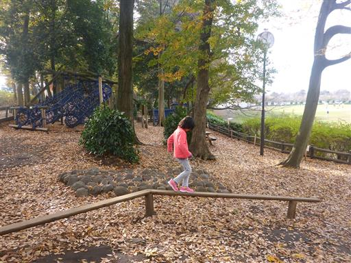
ネットのトンネル。前回訪問時から1年近く経っているため、
息子もある程度、アスレチックを楽しめるようになっている。
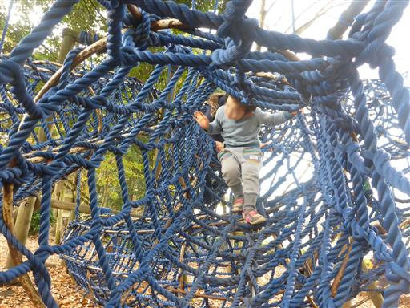
恐らく一番難しいアスレチック。結ばれたロープを登る。
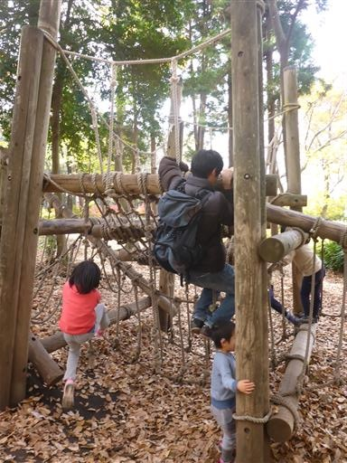
しばらく遊具で遊んだら、動物広場に行ってモルモットを抱っこする。
前回はニンジンをあげたのだが、時間が決まっているようで今回はあげられなかった。
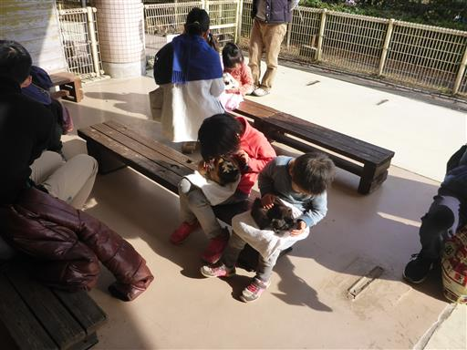
モルモットはとても大人しい。触っても抱っこしてもジッとしている。
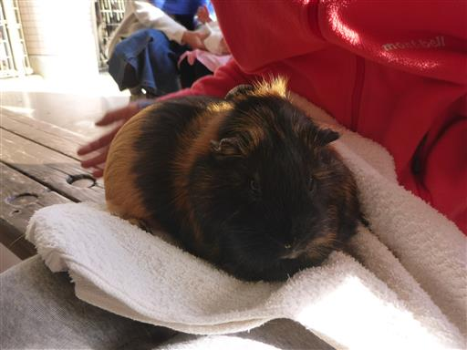
次は羊と触れ合う。毛は分厚く弾力があり手を突っ込むと、とても暖かい。
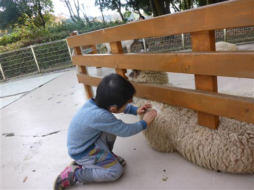
遊具広場に戻って昼食をとったら、魚釣りゲームをする。
ボランティアで開催されていて、自由に参加することができる。
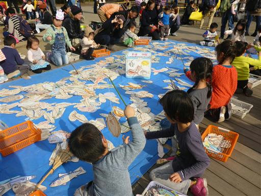
娘はちょっと釣りすぎだ…
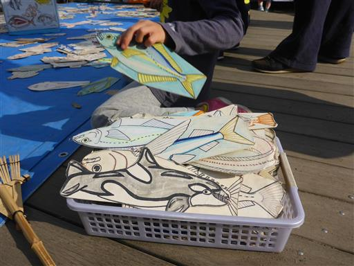
変わった遊具。基本はぶら下がって遊ぶものと思われるが、
上に乗っている人を見て、娘も「乗りたい」と言い出す。娘は載せてもらってご満悦。
自分も乗ってみたが、乗るのは結構大変だし、乗ってからも
大人の体重ではかなり前傾姿勢になるため結構辛い。
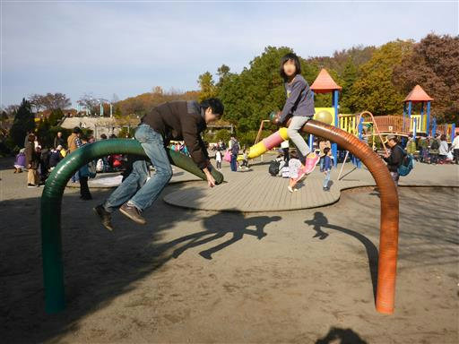
最後に再びアスレチック広場に寄る。
息子は高いところが怖いらしく、ネットでできた橋はかなり慎重に渡っている。
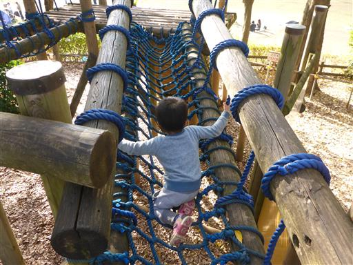
アスレチックでいくらか遊んでから帰宅する。
家から遠いのが難だが、子供たちにとっては充実した休日になった。
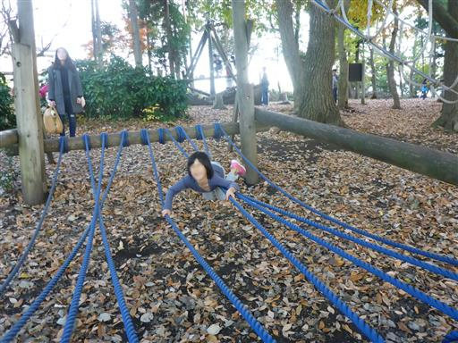
他の記録